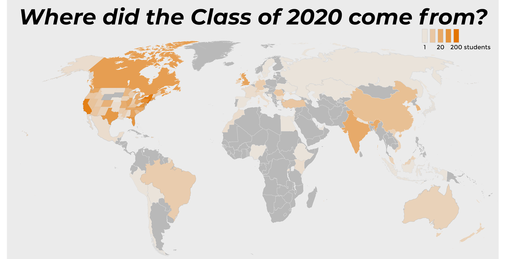

rotate your device

COMMENCEMENT2020
SPECIAL ISSUE
rotate your device
COMMENCEMENT2020
SPECIAL ISSUE
On September 11, 2016, nearly all 1,312 members of the Class of 2020 streamed into the University Chapel for Opening Exercises. It was one of their first times together as a class.
Twenty years prior, Toni Morrison had found Princeton “redolent with the breath of the emotional life lived here and the intellectual life made manifest here.” Over their four years on campus, the students of the Class of 2020 would make good on both.
Those students, however, arrived at a university wrestling with its own past. The previous November, students from the Black Justice League had occupied the office of President Christopher L. Eisgruber ’83, in protest against the University’s celebration of white supremacist Woodrow Wilson Class of 1879.
By pre-ordering, you will be the first to hear when the issue is available, but you will not be obligated to order one at that point. We will not use your email address for any other purpose than to let you know when the Commencement Issue is available!
On that September afternoon, as the Class of 2020 sat awe-struck beneath granite pillars and stained glass, acrimony and prejudice surged across the world. As Eisgruber reflected, “This September follows a searing summer, a summer filled with loss and grief and violence around our planet and in this country.”
Fifty-eight days later, Donald Trump would win the presidency of the United States. Just as Princeton was grappling with its historical contradictions, so too was the nation.
Four years later, historic achievements distinguish the Class of 2020, which includes musicians and athletes, mathematicians and anthropologists, artists and engineers. On Sunday, Nicholas Johnson, the first Black valedictorian in Princeton’s 274-year history, will address his peers.
As the Class of 2020 celebrates all it has achieved, campus will be empty. But the work of making Princeton a better place continues. To that centuries-long conversation, the Class of 2020 has submitted its own indelible contribution.
This, then, is the story of a remarkable Class and its students — the triumphs they earned and the travails they endured, the heights they scaled and the legacies they leave behind.
The Class of 2020 comprises a diverse and vibrant array of students, whose unique backgrounds and experiences inform the Class’ collective perspective.
In 2015, 29,303 students applied to Princeton, in what was then the largest applicant pool in the University’s history. The following fall, 1,312 matriculated as members of the Class of 2020.
Of those students, 20 percent identified as Asian, 9 percent as Hispanic, 8 percent as African American, and less than 1 percent as American Indian.
In total, 153 students, or 12 percent of the Class, hailed from 49 countries beyond the United States. Stateside, 200 students came from New Jersey, 156 from New York, and 129 from California.

During their time at Princeton, members of the Class studied a striking range of subjects, from Philosophy to Chemical Engineering, from Geosciences to African American Studies. On Sunday, approximately 76 percent of the Class will receive Bachelor of the Arts (AB) degrees, while the other quarter will receive Bachelors of Science in Engineering (BSE).
In the classroom, on the field, and on the stage, graduating seniors have earned countless honors, as they’ve sought academic challenge, won championships, and captivated audiences.
Among many other incredible students, the Class of 2020 includes two Rhodes Scholars, a Jeopardy! contestant, and the fifth pick in the 2020 WNBA draft.
Under the Class of 2020’s leadership, Princeton became the first Ivy League school to secure 500 Ivy League Championships.
In this special retrospective, we chronicle how the Class of 2020 got here.

As Princeton adopted a new motto, students advocated for undocumented immigrants and protested the election of Donald Trump. Myesha Jemison ’18 made history as the first Black woman elected Undergraduate Student Government president, and Bella Alarie ’20 played, on the USA Basketball Women’s Under-19 World Cup Team.

“When a snowstorm hit this past winter, essential campus dining staff…were offered the opportunity to come to campus the night before. That was good, but the conditions workers found when we arrived were not.”
With Honor Code referenda, a newly-resumed transfer program, and faculty approval of a new calendar, reform swept campus as the Class of 2020 finished its second year. Institutional reckoning and classroom controversy only added to the debate. In sports, field hockey reached the NCAA quarterfinals.

This same year, the women's field hockey team advanced to the quarterfinals in the NCAA tournament and were Ivy League champions.
Despite progress for women on campus, the University has a long way to go in addressing sexual misconduct, combating misogyny on male sports teams, and rectifying the lack of female mentors.
As students and faculty considered curricular equity and the wrestling team made history, Maria Ressa ’86 endured political repression in the Philippines. The year culminated in student protests to reform Princeton’s Title IX office.

This event, which was started during the Class of 2020's first year at Princeton, has become an annual tradition.
Eating club demographics reveal social stratification.
The ‘Prince’ commemorated the 50th anniversary of the occupation of the New South building for the special issue titled “Power of a United People.”
Though the rising seniors had weathered years of political upheaval, nothing could prepare them for COVID-19. With seasons cut short and theses interrupted, the Class of 2020 has demonstrated extraordinary strength and community in the face of a global crisis.

“In this case, the University’s concrete step backwards is yet another memorial on campus dedicated to avowed white supremacist Woodrow Wilson.”

The conference, titled “Thrive: Empowering and Celebrating Princeton’s Black Alumni,” featured presentations, discussions, and more. It was the fourth conference of its kind.
The November 2017 complaint, which was one of the first challenges to the government’s decision to end DACA, alleged that the program’s termination violated both the United States Constitution and federal law. It was put forth by the University, Microsoft President and University trustee Brad Smith ’81, and María Perales Sánchez ’18.
Over three years after his original arrest in 2016, University graduate student Xiyue Wang returned to Princeton, N.J. During the previous three years, the Free Xiyue Wang Working Group arose among graduate students, holding vigils in his honor and fighting for his release.
The ‘Prince’ invited students from the Class of 2020 to participate in a photo essay that aimed to create alternative thesis photos — in honor of all the seniors who will not be able to celebrate the capstone of their Princeton careers on campus.
For the Class of 2020, this weekend should have been the bittersweet culmination to four years on campus. Yet, ten weeks ago, COVID-19 forced the Class to bid Princeton an abrupt and unwelcome farewell.
As the coronavirus overtook the world, seniors navigated the most formidable challenges they had ever faced — not least, finishing their theses and capstone projects amid a pandemic.
In the same 1996 speech in which she celebrated the “breath” of Princeton’s emotional and intellectual lives, Morrison pondered the institution’s future. She asked, “Will instruction be executed solely in solitude by the isolated handling of sophisticated new machines?”
Today, Morrison’s question resonates with stunning prescience — especially considering that Eisgruber cited those very words nine months ago, as the Class of 2023 sat in the Chapel for its own Opening Exercises. Though unthinkable then, the pandemic now leaves us no choice but to learn “solely in solitude.”
At this critical moment, the Class of 2020 is poised to fulfill the motto unveiled in its first year: to live “in the nation’s service and the service of humanity.”
Tomorrow, an incredible community of leaders, advocates, scholars, and visionaries will become Princeton alumni. A world in need of remaking awaits them.